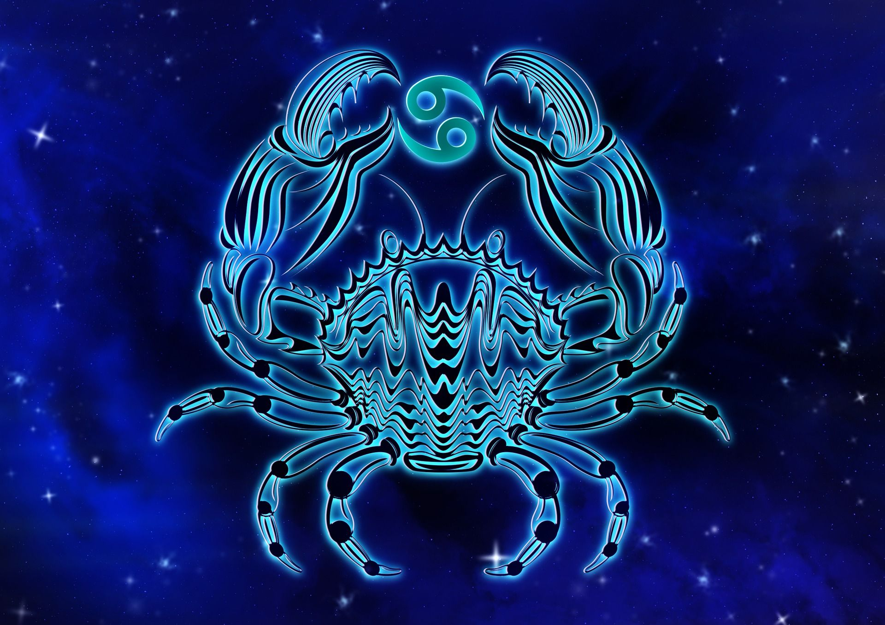

PISCIS

Por último, al signo Piscis que abarca entre el 20 de febrero y el 20 de marzo se le atribuyen características como la creatividad, imaginación, la sensibilidad, la amabilidad, la intuición, la empatía, la paciencia y la facilidad para soñar. Además, los Piscis suelen ser personas tranquilas que evitan meterse en problemas e incluso les llega a costar rebelarse ante algunas injusticias.
Piscis es un signo mutable y de agua, también es el último signo del zodiaco, precisamente por eso, es el más rico y complejo de todos. Sensible ante el sufrimiento de los demás, responde con buena voluntad y ganas de ayudar. No le gusta sentirse preso y ni respeta las convenciones, así, por las buenas, aunque tampoco tiende a luchar contra lo establecido, sencillamente, discurre por otro lado. Los Piscis tienden a vivir de una manera emocional más que racional, de forma instintiva e intuitiva más que de forma lógica. Les cuesta mucho transmitir lo que perciben, no saben expresarlo con palabras sino con acciones... Una clave para los Piscis es cómo contactan con su sensibilidad.
Además, aunque suele decirse de Piscis que es el signo de la ingenuidad, cuando es su respuesta ante el mundo de las sensaciones que contempla y percibe lo que le hace ser ingenuo o escéptico, dos extremos de la misma cuerda. En el amor, son personas fieles, adaptables y que buscan incansablemente una unión con la mente y el espíritu de su pareja más que una unión puramente sexual. Necesitan soñar conjuntamente con su media naranja y sentir para dar un amor puro y un sexo muy especial.
ALGUNOS FAMOSOS CON ESTE SIGNO
Rihanna: nacida el 20 de febrero de 1988 Una reina caribeña a la que apoyamos. Rihanna no es ajena a la creatividad. Como hace un Piscis, capta exactamente lo que sentimos sin decir demasiado.

Olivia Rodrigo: nacida el 20 de febrero de 2003 El hecho de que Olivia sea Piscis es justicia astral. Los piscis suelen vivir eventos frustrantes, que solo pueden ser expresados a través de una canción. La voz de la cantante hace que todas sus canciones tengan ese toque de ensueño. Además, con su Sol regido por Júpiter, tiene la habilidad de contar historias fascinantes.

Becky G: nacida el 2 de marzo de 1997 Piscis tiene la capacidad de iniciar conversaciones incómodas. Becky G lo hizo con sus canciones de reguetón. Las mujeres también podemos hablar sobre sexo en las mismas.

CANCER
Tradicionalmente, la astrología occidental atribuye al signo del zodiaco Cáncer aquel que abarca entre el 22 de junio y el 21 de julio características como la lealtad, la simpatía, la sensualidad, la intuición, la creatividad, la cautela, la necesidad de proteger a sus familiares y amigos y la sensibilidad. Pero también, las personas de este signo pueden ser celosas, inseguras, desconfiadas, muy golosas e incluso introvertidas.
Cáncer es un signo cardinal y comprendido dentro de los signos de agua. De los signos zodiacales, su carácter es el menos claro; puede ser desde retraído, insociable y pelma, hasta deslumbrante, atractivo y admirado por los demás. A veces es demasiado soñador, por eso equivoca el mundo real con la utopía que ha construido en su cabeza: el refugio de las fantasías que adora. Los Cáncer tienen una memoria extraordinaria y además poseen un talento innato para las artes y las letras notable. Además son ambiciosos y pueden cambiar sin dificultad de profesión, de amistades, etc.
El Cangrejo vive su vida dando dos pasos hacia delante y uno hacia atrás; es curioso pero temeroso, es bravo pero sensible, es voluble pero conservador, ¡vamos!, ¡el mejor exponente del espíritu de la contradicción pura! Cuando se trata de amor, en sus relaciones Cáncer es también una mezcla de contradicción; si mantiene una relación estable, ama de verdad, sinceramente, aunque en su yo interno eso no significa que no pueda mantener relaciones sexuales con otras personas. Además, se caracteriza por una ternura, emoción e imaginación que le convierten en un amante muy, muy especial.